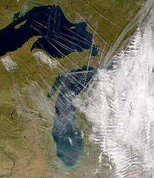
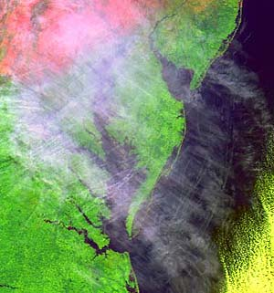
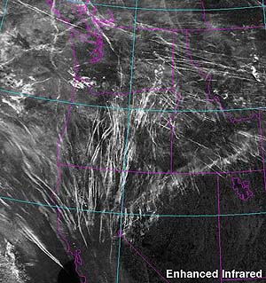
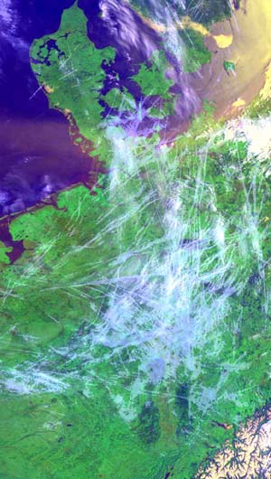
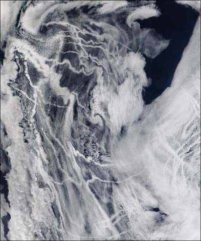

Aviation-smog, caused by air traffic at great heights may have undesirable consequences for weather, climate and the quality and quantity of the Sun's radiation that reaches the surface of Earth. In the discussion about radiative forcing, greenhouse effect and global warming, this deserves more attention.
—Contrails and Aviation Cirrus
In just a few hours a contrail that begins life only a few meters in width can spread to cover more than 20,000 square kilometers.
—NASA Langley Cloud and Radiation Research Center
In 2000 there were 8,951,773 commercial aircraft departures in the United States alone.—
AirTraffic
"Some unburned fuel is found in jet-aircraft exhaust"
"Most petroleum fuels are mixtures of hundreds of different hydrocarbon compounds"
"It seems sunlight is mimicking the conditions in the combustion chamber which activate the lead chemistry"
Video
- Flight Patterns by Aaron Koblin
- visualizations of flight traffic patterns and density
The full climate impact of aviation goes beyond the effects of CO
2 emissions,
though. Apart from emitting CO
2, aircraft contribute to climate change through the
emission of nitrogen oxides (NOx), which are particularly effective in forming the
greenhouse gas ozone when emitted at cruise altitudes. Aircraft also trigger
formation of condensation trails, or contrails, and are suspected of enhancing
formation of cirrus clouds, both of which add to the overall global warming effect.
In 1999 the Intergovernmental Panel on Climate Change (IPCC), examining the
total climate impact of aviation, estimated these effects to be about 2 to 4 times
greater than those of CO
2 alone, even without considering the potential impact of
cirrus cloud enhancement.
—Aviation and climate change
The altitude at which aircraft fly significantly exacerbates the warming created by carbon dioxide emissions. For example, contrails, cirrus clouds and greenhouse gases formed by aircraft induce additional warming effects which amplify the climate impact of the aviation industry...Where the multiplier is used as a simple `uplift' to carbon emissions, it is commonly in the order of 2.0 to 3.5 times the impact of carbon alone.
—Decarbonising the UK
Scientists have long suspected that airplane condensation trails—the wispy, white tails found in the wake of high-flying jets—form larger cloud banks that substantially alter the atmosphere's heat balance.
A team of climatologists presented their work Tuesday, showing that temperatures in the United States fluctuated by 1.2 degrees Celsius more when airplanes were grounded than when normal flight patterns prevailed. That is, planes in the sky dampen the variability between day and nighttime temperatures.
—Hot on the Contrails of Weather
NASA scientists have found that cirrus clouds, formed by contrails from aircraft engine exhaust, are capable of increasing average surface temperatures enough to account for a warming trend in the United States that occurred between 1975 and 1994.
—Clouds Caused By Aircraft Exhaust May Warm The U.S. Climate

Those wispy streams of vapor that follow jetliners across the sky may not be as innocuous as they appear.
A new NASA study claims man-made cirrus clouds formed by commercial jet engine exhaust may be responsible for the increased surface temperatures detected in the United States between 1975 and 1994.
Climate data shows there has been a 1 percent per decade increase in cirrus cloud cover over the United States, which the NASA paper says is likely due to commercial air traffic.
—Climate Change Out of the Blue
Several scientific studies have suggested that aviation may contribute to detrimental chemical changes in the atmosphere (particularly ozone content), as well as possible climate modification. The most widely accepted assessments are those conducted by United Nations (U.N.) scientific organizations. Ozone trends are monitored by the United Nations Environment Programme (UNEP) and the World Meteorological Organization (WMO).
Air traffic and, therefore, contrails, are not evenly distributed around the globe. They are concentrated over parts of the United States and Europe, where local warming reaches up to 0.7 watts per square meter, or 35 times the global average.
—Air Traffic Contributing to Climate Change and Ozone Destruction

A high-altitude jet airplane’s condensation trail (contrail) is a climatologically important byproduct of air traffic because it can function as a man-made cirrus cloud (a thin, high-altitude ice cloud). A contrail forms when hot and humid air from a jet engine’s exhaust mixes with cold and drier air in the upper troposphere through which the airplane passes. If the relative humidity of the high-altitude air is very low, a contrail quickly dissipates. If the air is moist, the contrail spreads horizontally and forms a thin layer of cirrus cloud that persists for many hours.
Cirrus clouds (and by implication, contrails) are climatologically important because they function as net warmers of earth’s atmosphere.
—Leaving a Trail
On clear winter days, the sky can resemble an enormous Etch A Sketch. White lines left in the wake of jets crisscross each other, often stretching from one horizon to the other.
But as ephemeral as they may seem, these cloudy trails could be contributing to global warming by trapping heat, according to a growing body of scientific research. If counted all over the globe, contrails—the vapor trails left by aircraft—have been found to cover a small but noticeable portion of the Earth's surface.
From 35,000 feet below, contrails may look like wispy lines. But they can grow into clouds many miles wide and hundreds of feet tall, and they often contain pollutants left by the burning of thousands of gallons of jet fuel. The trails and the clouds they create help to trap heat, contributing to the greenhouse effect, several recent studies contend.
—JET EMISSIONS OF VAPOR, GASES MAY CONTRIBUTE TO WARMING

Aerosols, which are minute airborne particles, have a profound effect on the Earth’s climate system, influencing the amount of sunlight that impinges on the surface, altering the properties of clouds, and impacting the hydrological system.
—New Findings Highlight the Significance of Aerosols in the Earth’s Climate System
Impact of Jet Condensation Trails Upon the Radiation Budget over Northwest Europe and the North Atlantic
The track of large ships is sometimes visualised by a trail of shallow stratus clouds. These clouds, known as 'ship tracks', form in the wake of ships and are remarkably long-lived. They typically are between 0.5-5 km wide, i.e. wide enough to be seen in visible satellite imagery. Sometimes a ship track appears as a band of enhanced cloud thickness embedded in stratus. Ship tracks are due to cloud condensation nuclei (CCN) in the ship's exhaust.
The apparent reduction of the diurnal temperature range in the Midwestern USA during the last 50 years is partly attributed to the increase of contrails along the main flight corridors.
—Effects of contrails and ship tracks on climate
In 1999 the Intergovernmental Panel on Climate Change (IPCC) calculated that contrails from the world fleet of 12,000 civil airliners contribute as much to global warming as the CO
2 their engines pour out as they burn jet fuel.
But global air traffic is growing by around 3.5 per cent per year, and many of those extra flights are long-haul, high-altitude, contrail-forming journeys. So by 2050 contrails will be having a great deal more of an impact on global warming than the CO2 emissions from aircraft engines.
—Aircraft vapour trails are climate scourge
Intergovernmental Panel on Climate Change

Recent advances in our understanding of heterogeneous chemistry in the lower stratosphere and the role of aerosols and clouds in climate forcing have increased the need to understand the influence of these aircraft emissions on atmospheric composition. Aerosol particles from aviation—comprising soot, metals, sulfuric acid, water vapor, and possibly nitric acid and unburned hydrocarbons—may influence the state of the atmosphere in many ways. These particles may provide surfaces for heterogeneous chemical reactions, both in the exhaust plume and on regional and global scales; represent a sink for condensable atmospheric gases; absorb or scatter radiation directly; and change cloud properties that may affect radiation indirectly. Persistent contrails can directly cause additional cirrus clouds to form. In addition, aerosol particles may enhance sedimentation and precipitation of atmospheric water vapor, hence affecting the hydrological cycle and the budget of other gases and particles. Changes in cloud formation properties and cloud cover may also affect actinic fluxes in the atmosphere and ultraviolet-B (UV-B) radiation at the surface.
Aviation and the Global Atmosphere
Aviation-Produced Aerosols and Cloudiness
Flying aircraft 6,000 feet (1.8 kilometres) below current altitudes could help curb the contribution to climate change made by aircraft. UK scientists say this would result in a 47% reduction in contrails, the exhaust streams produced by aircraft.—
Fly lower to cut climate impact
European Geophysical Society 2003 :
INCREASES IN JET CONTRAIL COVERAGE FOR THE US AND IMPLICATIONS FOR CONTEMPORARY CLIMATE CHANGES
"One of the most readily visible signs of human presence, is the occurrence of contrails from aircraft in the upper atmosphere. These are crystals of ice formed from water, a byproduct of the combustion process in the aircraft engines, and which is collected into the wake vortices of the aircraft. They are very long lasting, and can be seen over virtually all parts of the world as white streaks across the sky. They can be striking around cities that are major air traffic hubs, and can oftentimes be seen radiating out from these cities, like spokes in a wheel"—Dr. Andy Thomas, Astronaut STS-91
Why I Don't Take Airplanes AnymoreThe real impact of air travel and the tourism industry
"Aviation is a rogue sector and its environmental impact is out of control. Climate change is the most urgent challenge facing humanity and yet aviation policy is doing the opposite of what is needed."
- —Tony Juniper, Director of Friends of the Earth England, Wales and Northern Ireland and Vice-Chair of Friends of the Earth International